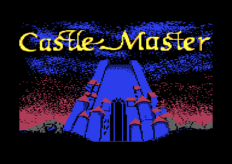
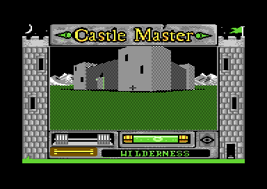

<meta charset="utf-8">
<meta name="viewport" content="width=device-width, initial-scale=1">
<title>{{title}}</title>
<link rel="preconnect" href="https://fonts.googleapis.com">
<link rel="stylesheet" href="https://fonts.googleapis.com/css2?family=Lato:wght@400;700;900&family=IBM+Plex+Mono:wght@400;500&display=swap">
<style>
:root{
  --bg:#23262d; --paper:#e9e7e1; --surface:#ffffff; --surface-2:#f1efea; --line:#d5d3cc; --line-soft:#e0ded8;
  --ink:#2f3136; --ink-soft:#55585f; --ink-mute:#80838a;
  --link:#1f5fa8; --link-hover:#154480; --accent:#1f5fa8;
  --amber:#c25a00; --cyan:#1f5fa8; --coral:#d04a3a; --green:#2a8a4a; --violet:#4a5bd6; --hl:#fff0c2;
  --chip:#2f3136; --chip-ink:#ffffff;
  --c64blue:#40318d; --c64grey:#686868;
  --fd:'Lato',system-ui,sans-serif; --fb:'Lato',system-ui,sans-serif; --fm:'IBM Plex Mono',ui-monospace,Menlo,monospace;
  --col:1080px; --gx:68px; --fs:17px; --lh:1.6; --hw:900; --h1:46px; --h2:26px; --sy:48px; --pp:26px; --r:10px;
  --plate-shadow:0 1px 2px rgba(0,0,0,.05),0 4px 14px rgba(0,0,0,.05);
}
*{box-sizing:border-box}
html{background:var(--bg);min-height:100%}
body{background:var(--paper);color:var(--ink);font-family:var(--fb);font-size:var(--fs);line-height:var(--lh);max-width:var(--col);margin:0 auto;min-height:100vh;padding:0 0 4rem}
h1,h2,h3{font-weight:var(--hw);letter-spacing:-.01em;text-wrap:balance;color:var(--ink);margin:0}
.wrap{padding:0 var(--gx)}
.hero{padding:48px var(--gx) 8px;text-align:left}
.eyebrow{font-family:var(--fm);font-size:12px;letter-spacing:.08em;text-transform:uppercase;color:var(--ink-mute);margin:0 0 10px}
.hero h1{font-size:var(--h1);line-height:1.15;letter-spacing:-.02em;margin:0 0 14px}
.hero .sub{margin:0 0 .6em;color:var(--ink-soft)}
section{padding:var(--sy) 0 24px}
section:last-of-type{border-bottom:none}
.fig{font-family:var(--fm);font-size:12px;letter-spacing:.08em;text-transform:uppercase;color:var(--ink-mute);margin:0 0 10px}
h2.t{font-size:var(--h2);margin-bottom:12px}
.lede{color:var(--ink-soft);margin:0 0 30px}
.plate{background:var(--surface);border:1px solid var(--line);border-radius:var(--r);padding:var(--pp);box-shadow:var(--plate-shadow)}
.cap{font-size:14px;color:var(--ink-mute);margin-top:14px;line-height:1.55}
.cap b{color:var(--ink);font-weight:700}
code{font-family:var(--fm);font-size:.82em;background:var(--chip);color:var(--chip-ink);border-radius:4px;padding:2px 6px;white-space:nowrap}

a{color:var(--link)} a:hover{color:var(--link-hover)}
.cm-pics{display:grid;grid-template-columns:1fr 1fr;gap:16px;margin:22px 0 0}
.cm-pics figure{margin:0}
.cm-pics img{display:block;width:100%;height:auto;image-rendering:pixelated;border-radius:4px}
.cm-pics figcaption{font-size:13px;color:var(--ink-mute);margin-top:6px}
.cm-frame{display:block;width:100%;max-width:768px;height:auto;margin:0 auto;image-rendering:pixelated}
.cm-fwrap{position:relative;max-width:768px;margin:0 auto}
.cm-box{position:absolute;border:2px solid #ff932f;box-shadow:0 0 0 1px rgba(0,0,0,.4);pointer-events:none}
.cm-bar{display:flex;flex-wrap:wrap;align-items:center;gap:8px 14px;margin:0 0 12px;font-family:var(--fm);font-size:12.5px;color:var(--ink-soft)}
.cm-bar label{display:inline-flex;align-items:center;gap:6px;cursor:pointer}
.cm-bar select{font:inherit;background:var(--surface);border:1px solid var(--line);color:var(--ink);padding:5px 8px;border-radius:6px;max-width:100%}
.cm-bytes{display:flex;flex-wrap:wrap;gap:4px;margin:6px 0 14px;font-family:var(--fm);font-size:12.5px}
.cm-bytes span{padding:3px 5px;border-radius:4px;background:var(--surface-2);border-bottom:3px solid var(--c,#ccc)}
.cm-bytes span.cm-gap{margin-left:8px}
.cm-fields{display:grid;grid-template-columns:auto 1fr;gap:4px 14px;font-size:14px;margin:0}
.cm-fields dt{font-family:var(--fm);font-size:12.5px;white-space:nowrap}
.cm-fields dt i{display:inline-block;width:10px;height:10px;border-radius:2px;margin-right:6px;background:var(--c)}
.cm-fields dd{margin:0;color:var(--ink-soft)}
.cm-script{font-family:var(--fm);font-size:12.5px;line-height:1.6;margin:10px 0 0;padding:0;list-style:none}
.cm-script .cm-ev{display:inline-block;min-width:4.6em;color:var(--ink-mute)}
.cm-script .cm-in{padding-left:1.4em}
.cm-script .cm-if{color:var(--violet)}
.cm-tbl{border-collapse:collapse;width:100%;font-size:14px;margin:4px 0 0}
.cm-tbl th{font-family:var(--fm);font-size:11.5px;letter-spacing:.05em;text-transform:uppercase;color:var(--ink-mute);font-weight:500;text-align:left;padding:6px 8px;border-bottom:1px solid var(--line)}
.cm-tbl td{padding:6px 8px;border-bottom:1px solid var(--line-soft);vertical-align:top}
.cm-tbl td.cm-n{font-family:var(--fm);font-size:12.5px;white-space:nowrap}
.cm-key{display:inline-block;font-family:var(--fm);font-size:12px;border:1px solid var(--line);border-bottom-width:2px;border-radius:4px;padding:0 6px;margin:1px 3px 1px 0;background:var(--surface)}
.cm-two{display:grid;grid-template-columns:minmax(0,1fr) minmax(0,1fr);gap:22px}
.cm-err{color:var(--coral);font-family:var(--fm);font-size:13px}
details.cm-more{margin-top:14px}
details.cm-more summary{cursor:pointer;font-family:var(--fm);font-size:12.5px;color:var(--link)}
@media (max-width:760px){.cm-pics,.cm-two{grid-template-columns:1fr}}
@media (max-width:650px){:root{--gx:18px;--h1:36px;--sy:32px;--pp:14px}}
</style>
<!-- tabs -->
<header class="hero">
  <p class="eyebrow">{{platform}} · {{year}} · {{publisher}}</p>
  <h1>{{title}}</h1>
  <p class="sub">A castle of 33 places built from boxes, pyramids and flat panels, every door, key and potion of it run by 193 small scripts in the game's own language, and one music driver that plays both the theme and every sound effect.</p>
</header>
<main class="wrap">
<section id="cm-game">
  <p class="fig">01 · The game</p>
  <h2 class="t">Castle Eternity</h2>
  <p>Castle Master is a first-person adventure in solid 3D, drawn by Incentive Software's Freescape engine. The prince or the princess, as the player chooses at the start, comes to Castle Eternity to rescue a twin held in one of its towers by the Magister, who means to make spirit slaves of them both. The player walks, runs, crawls, turns and looks up and down, throws rocks, and uses an action key to open, push, eat, drink and read.</p>
  <p>The castle is the Wilderness outside, the Courtyard, 26 rooms, and five caverns. Doors are opened by finding ten keys and by solving riddles carved on panels, and the twin's door in the Magister's room opens only to a player holding all ten. On the way the player's strength runs down, guardian spirits wait to be destroyed, and three potions wait to be found. A game ends when strength runs out, in a fatal fall, when the spirits overpower the player, or when the twins escape together.</p>
  <p>The C64 version was published by Domark in 1990. Ian Andrew designed it; Chris Andrew, Paul Gregory, and Sean Ellis programmed it; Mike Salmon and Team 7 drew the graphics, Mel Croucher wrote the story and the riddles, and Teque Software Development wrote the music (the manual's credits).</p>
  <div class="cm-pics">
    <figure><figcaption>The picture shown while the game loads.</figcaption></figure>
    <figure><figcaption>The first view of play, from the Wilderness.</figcaption></figure>
  </div>
</section>

<section id="cm-music">
  <p class="fig">02 · The sound</p>
  <h2 class="t">Music: one driver plays the theme and every effect</h2>
  <p class="lede">Every sound in the game is a tune of the same driver: the title theme, the escape's tune, and fifteen short effects. The player below runs the game's own driver.</p>
  <div class="plate">
    <div id="cm-sid"></div>
    <p class="cap">The driver's code and its state, <code>$C800-$CFFF</code>, and its tables, <code>$065A-$1046</code>, run on the kit's 6502 simulator inside the page, called as the game calls them: <code>SID_PLAYER_INITIALIZE</code> (<code>$CF1B</code>) with the tune in A, then <code>SID_PLAYER_TICK</code> (<code>$C885</code>) once a frame. <code>test_music.js</code> makes the same calls on the simulator directly and finds every SID write the same, in the same order, for all 17 tunes: 16,457 frames.</p>
  </div>
  <p>The sound menu, F on the information screen, switches between music and effects (<code>$123A</code>). With music on, the theme loops through play, started again whenever it ends (<code>$7393</code>), and no effect is heard. With effects on, every request goes through <code>SID_INITIALIZE_IF_ENABLED</code> (<code>$CFD8</code>), which plays effect n as tune n + 1. The game asks for them from these places:</p>
  <table class="cm-tbl"><thead><tr><th>Tune</th><th>Effect</th><th>Asked for by</th></tr></thead><tbody>
    <tr><td class="cm-n">2</td><td class="cm-n">1</td><td>scripts</td></tr>
    <tr><td class="cm-n">3</td><td class="cm-n">2</td><td><code>RUN_VIEWPORT_TRANSITION</code> (<code>$8306</code>, <code>$8363</code>) and scripts</td></tr>
    <tr><td class="cm-n">4</td><td class="cm-n">3</td><td>movement (<code>$5F46</code>), centring the sights (<code>$634B</code>), the information menu (<code>$79DD</code>), <code>$4A2B</code>, <code>$834B</code> and scripts</td></tr>
    <tr><td class="cm-n">5</td><td class="cm-n">4</td><td>scripts: the three potions, and the 13 objects that give 4 strength</td></tr>
    <tr><td class="cm-n">6</td><td class="cm-n">5</td><td>a rock thrown (<code>$63B5</code>) and scripts</td></tr>
    <tr><td class="cm-n">7</td><td class="cm-n">6</td><td>nothing</td></tr>
    <tr><td class="cm-n">8</td><td class="cm-n">7</td><td>every move to another area (<code>$6CE0</code>)</td></tr>
    <tr><td class="cm-n">9</td><td class="cm-n">8</td><td>lightning (<code>$484F</code>), a fall (<code>$8164</code>) and scripts</td></tr>
    <tr><td class="cm-n">10</td><td class="cm-n">9</td><td>nothing</td></tr>
    <tr><td class="cm-n">11</td><td class="cm-n">10</td><td>scripts: a key found</td></tr>
    <tr><td class="cm-n">12</td><td class="cm-n">11</td><td>scripts: a door opening, and the treasure chest</td></tr>
    <tr><td class="cm-n">13</td><td class="cm-n">12</td><td>walking into something (<code>$53D1</code>, <code>$54A1</code>)</td></tr>
    <tr><td class="cm-n">14</td><td class="cm-n">13</td><td>moves to another area once the escape has begun (<code>$6D3D</code>), and scripts</td></tr>
    <tr><td class="cm-n">15</td><td class="cm-n">14</td><td>scripts</td></tr>
    <tr><td class="cm-n">16</td><td class="cm-n">–</td><td>the sensors' alarm, started directly by the raster interrupt in effects mode (<code>$73A1</code>); it has <a href="discoveries.html#cm-alarm">a bug of its own</a></td></tr>
      </tbody></table>
  <p class="cap">Effects 6 and 9 are in the driver and nothing asks for them. Tune 1, the escape's, is started by the script that sets flag 31, which also turns the switch to music (<code>$6C70</code>).</p>
</section>

<section id="cm-frame">
  <p class="fig">03 · One frame</p>
  <h2 class="t">One frame of play, rebuilt from memory</h2>
  <p class="lede">The first view of play, drawn by this page from the bytes of the video chip, the bitmap, and the colour memory as the frame began.</p>
  <div class="plate">
    <div class="cm-bar"><label><input type="checkbox" id="cm-win"> mark the 3D view</label></div>
    <div class="cm-fwrap"><canvas id="cm-fcv" class="cm-frame" width="768" height="544" aria-label="The first frame of play, rebuilt"></canvas><div class="cm-box" id="cm-fbox" hidden></div></div>
    <p class="cap">Drawn with the site's renderer from a whole frame recorded in the emulator (<code>kit/c64/frame.py</code>); <b>0 of 104,448 pixels</b> differ from the emulator's own picture of the same frame.</p>
  </div>
  <p>Everything but the view is loaded once, from the files <code>CNBMAP</code>, <code>CNCOL1</code> and <code>CNCOL2</code>, and stays: the towers, the title, the strength and spirit gauges, and the line of text. The VIC shows a multicolour bitmap at <code>$E000</code> with its colours at <code>$C400</code>, and the game never moves either. The 3D view is 120 by 120 pixels, each pixel two wide on the screen. It is drawn into a buffer of its own, 120 rows of 30 bytes at <code>$87CC-$95DB</code>, and only then copied into the 30 by 15 character cells of the bitmap that start at <code>$E528</code> (<code>BLIT_LINEAR_BUFFER_FORWARD_TO_VIC_BITMAP</code>, <code>$65E7</code>), so the reader never sees a half-drawn room.</p>
  <p>Inside the buffer the objects are drawn whole, farthest first, from a sorted queue. Each kind of shape has its builder: cuboids at <code>$2D20</code>, pyramids at <code>$2F21</code>, lines and polygons at <code>$32E1</code>, and flat rectangles at <code>$33A3</code>. The projection at <code>$3C05</code> puts the centre of the screen at (60, 60) and clips each face to the view's edges before it is filled.</p>
</section>

<section id="cm-data">
  <p class="fig">04 · The castle's database</p>
  <h2 class="t">Each area is a list of objects, and each object can carry a script</h2>
  <p class="lede">The whole castle is one block of 8,848 bytes at <code>$9D00-$BF8F</code>: 34 areas, 546 objects, and 193 scripts. Pick any object to see its bytes.</p>
  <div class="plate">
    <div class="cm-bar"><label>Area <select id="cm-ra"></select></label><label>Object <select id="cm-ro"></select></label></div>
    <div class="cm-bytes" id="cm-rb"></div>
    <dl class="cm-fields" id="cm-rf"></dl>
    <div id="cm-rs"></div>
    <p class="cap">Read from the listing by the same code as the <a href="levels.html">Maps / levels</a> tab, where every area is drawn. <code>test_world.js</code> checks that reading against the game's own <code>SELECT_AREA</code> (<code>$76D0</code>) for all 34 areas and its <code>FIND_OBJECT_BY_ID</code> (<code>$621C</code>) for every object.</p>
  </div>
  <p>A directory of 34 offsets at <code>$9D4F</code> finds each area's eight-byte header: the fills of its sky and floor, its object count, its id, where its own scripts begin, its scale, one of the four colours of its view, and the slot of its name among the messages. The objects follow, each with its type in the low four bits of the first byte and its state in the high four (<code>$40</code> hidden, <code>$20</code> destroyed), a position and a size in units of 64, an id, and its length. The type decides how many bytes of shape come next: the face colours of a cuboid, a pyramid's top, a polygon's corners. Whatever is left of the record after that is its script.</p>
  <p>One area, with the id 255, is not a place but a store of 100 shared objects: 58 cuboids, six of which (128 to 133) stand in 21 to 29 areas each, the three spirits, and 22 entrances, some of them holding the scripts that many objects hand over to. When an area is entered, <code>$7C5A</code> hides all 100 and then shows the ones named by a list in the area itself, an object of type 0 with the id 255 that is not a script at all. 31 of the 33 areas carry one.</p>
  <h3 style="font-size:19px;margin:28px 0 8px">The scripts</h3>
  <p>A script is a run of tokens. The low six bits of a token's first byte are its opcode, and the top two say which event it waits for: a move, the 10-second timer, a shot, or the action key. An object's script runs when the player walks into it, shoots it, or acts on it; then the five global scripts run, then the area's own (<code>DISPATCH_FRAME_CONDITIONS</code>, <code>$4A58</code>). <code>FCL_TOKEN_LENGTHS</code> (<code>$13AE</code>) gives 39 opcodes a length, and the castle's scripts use 29 of them: they add to the score and to strength, show, hide and destroy objects here or in another area, keep flags and variables, test them, print messages and riddles, play sound effects, wait, redraw, and move the player to another area.</p>
  <details class="cm-more"><summary>The opcodes</summary>
  <table class="cm-tbl"><thead><tr><th>Opcode</th><th>Arguments</th><th>What it does</th></tr></thead><tbody>
    <tr><td class="cm-n">$01</td><td>n, 24 bits</td><td>adds n to the score</td></tr>
    <tr><td class="cm-n">$03 $04 $05</td><td>object</td><td>toggles, shows, or hides it, unless it is destroyed</td></tr>
    <tr><td class="cm-n">$06 $07 $08</td><td>area, object</td><td>the same in another area</td></tr>
    <tr><td class="cm-n">$09 $0A</td><td>v</td><td>adds 1 to, or takes 1 from, variable v (<code>$2438</code> + v)</td></tr>
    <tr><td class="cm-n">$0B</td><td>v, n</td><td>tests that variable v is n</td></tr>
    <tr><td class="cm-n">$0C $0D $1D</td><td>b</td><td>sets, clears, or flips flag b, one bit of <code>$2439</code> onward; setting flag 31 starts the escape's tune</td></tr>
    <tr><td class="cm-n">$0E</td><td>b, n</td><td>tests that flag b is n</td></tr>
    <tr><td class="cm-n">$0F $1C</td><td>n</td><td>asks for sound effect n, at once or with the next picture</td></tr>
    <tr><td class="cm-n">$10 $11</td><td>object; area, object</td><td>destroys it</td></tr>
    <tr><td class="cm-n">$12</td><td>area, entrance</td><td>moves the player there, paying 17,500 for a first visit</td></tr>
    <tr><td class="cm-n">$13</td><td>n, signed</td><td>adds n to strength, up to 24</td></tr>
    <tr><td class="cm-n">$14</td><td>v, n</td><td>sets variable v to n</td></tr>
    <tr><td class="cm-n">$1A</td><td></td><td>redraws the view</td></tr>
    <tr><td class="cm-n">$1B</td><td>n</td><td>waits n ticks of the game clock, 60 to the second</td></tr>
    <tr><td class="cm-n">$1E $1F</td><td>object</td><td>tests that it is visible, or hidden</td></tr>
    <tr><td class="cm-n">$20 $21</td><td>area, object</td><td>the same in another area</td></tr>
    <tr><td class="cm-n">$22</td><td>n</td><td>prints message n, or with the top bit set a riddle panel</td></tr>
    <tr><td class="cm-n">$23</td><td>n</td><td>nothing</td></tr>
    <tr><td class="cm-n">$2C $2D</td><td></td><td>else, end if</td></tr>
    <tr><td class="cm-n">$2E $2F</td><td>v, n</td><td>tests that variable v is above, or below, n</td></tr>
    <tr><td class="cm-n">$30</td><td>object</td><td>runs that object's script instead of the rest of this one</td></tr>
  </tbody></table>
  <p class="cap">From <code>EXECUTE_FCL_STREAM</code> (<code>$68F5-$6FBC</code>), with the five the castle never uses: <code>$0A</code>, <code>$11</code>, <code>$1D</code>, <code>$20</code> and <code>$21</code>. A test that fails skips every later token until an else or an end if, and there is no nesting. Variables and flags share their bytes: variable 29 is strength and variable 31 the keys collected, and the flags 1 to 8 are variable 1.</p>
  </details>
</section>

<section id="cm-strength">
  <p class="fig">05 · Strength, keys and spirits</p>
  <h2 class="t">Strength drains, and the spirits keep time</h2>
  <p class="lede">Two gauges end a game: strength, kept at <code>$2455</code>, and the spirit meter, which fills with time.</p>
  <div class="cm-two">
    <div class="plate">
      <table class="cm-tbl"><thead><tr><th>Strength</th><th></th></tr></thead><tbody>
        <tr><td class="cm-n">16</td><td>at the start, the database's byte <code>$9D05</code> (<code>$4E3C</code>)</td></tr>
        <tr><td class="cm-n">24</td><td>the most a script can give (<code>$698C</code>)</td></tr>
        <tr><td class="cm-n">−1</td><td>every 10 seconds in an area with a sensor that is not hidden, wherever the sensor is (<code>$7545</code>)</td></tr>
        <tr><td class="cm-n">−1</td><td>AAAAAARRRGH!, shared object 206, from the Smithy, the Carpenter's, and shared object 208</td></tr>
        <tr><td class="cm-n">−5</td><td>a fall of the area's scale times 2 (<code>$7758</code>): at least that when the world changes under the player (<code>DROP_PLAYER_TO_SUPPORT</code>, <code>$81F4</code>), more than that in the collision response to a move (<code>$53BC</code>); both call <code>$8142</code></td></tr>
        <tr><td class="cm-n">−128</td><td>GLUG GLUG GLUG, the Wilderness's object 3 and the Hot Baths' object 17</td></tr>
        <tr><td class="cm-n">+1</td><td>every 10 seconds in the Hospital while strength is below 12, the area's own script</td></tr>
        <tr><td class="cm-n">+1</td><td>each drink of the potion of strength in the Stores, up to 64 (variable 25)</td></tr>
        <tr><td class="cm-n">+1</td><td>every 10 seconds, 64 times, after the potion of revitalisation (global script 4)</td></tr>
        <tr><td class="cm-n">+4</td><td>each of 13 objects in nine areas, six of them in the Kitchen and the Larder, which hand over to shared object 214</td></tr>
      </tbody></table>
      <p class="cap">Strength at 0 ends the game with YOU COLLAPSE (<code>$699D</code>, <code>$71E8</code>), and a fall with less than 5 left with FATAL FALL (<code>$8152</code>). <i>Live</i>: in the Magister, with its one sensor, strength fell from 16 to 13 in 30 seconds.</p>
    </div>
    <div class="plate">
      <table class="cm-tbl"><thead><tr><th>Score</th><th></th></tr></thead><tbody>
        <tr><td class="cm-n">6,250</td><td>each drink of the potion of strength</td></tr>
        <tr><td class="cm-n">17,500</td><td>the first visit to each area, paid by script opcode <code>$12</code> (<code>$6D1B-$6D2D</code>)</td></tr>
        <tr><td class="cm-n">22,500</td><td>each of the 13 objects that give strength (shared object 214)</td></tr>
        <tr><td class="cm-n">37,500</td><td>treasure found (shared object 216, from six places)</td></tr>
        <tr><td class="cm-n">75,000</td><td>each spirit destroyed (shared object 215)</td></tr>
        <tr><td class="cm-n">125,000</td><td>each key collected (<code>$70EE</code>)</td></tr>
        <tr><td class="cm-n">400,000</td><td>the potion of revitalisation, and the potion of rock travel</td></tr>
        <tr><td class="cm-n">3,000,000</td><td>the escape (the Magister's object 5)</td></tr>
      </tbody></table>
      <p class="cap">The ten-key door is the Magister's object 11. Its action script tests variable 31, the keys collected, for 10: then it prints THE DOOR OPENS, hides the door, objects 10 and 11, and shows object 5, the panel whose move script is the escape. Otherwise it prints NEED TEN KEYS.</p>
    </div>
  </div>
  <p>The spirit meter is a clock. <code>$246A</code> starts at 32 and goes up one step every two minutes; the meter shown is that clock times (21 − spirits destroyed) / 21, and at 64 the spirits win: OVERPOWERED. With no spirit destroyed that is 64 minutes after the start, and every spirit destroyed buys time.</p>
  <p>19 of the castle's 21 sensors have the id 125, 126 or 127, and global scripts 1 to 3 put up one of three shared spirits in any area where such a sensor still stands. Shooting the spirit destroys the sensor, which stops the drain, and runs shared object 215's script, which adds 1 to variable 28, the spirits destroyed, and 75,000 to the score. The meter's arithmetic goes wrong after 127, which <a href="discoveries.html#cm-meter">Discoveries</a> plays out.</p>
</section>

<section id="cm-controls">
  <p class="fig">06 · Controls</p>
  <h2 class="t">Twenty-two keys, read from one table</h2>
  <p class="lede"><code>READ_CONTROL_INPUT</code> (<code>$75C3</code>) keeps up to six codes a frame (<code>$137A-$137F</code>), and <code>$48C1-$48E2</code> looks each one up in the 22 pairs at <code>$1382</code>, the joystick's included.</p>
  <div class="plate">
    <table class="cm-tbl" id="cm-keys"></table>
    <p class="cap">Built from the 22 code and action pairs at <code>$1382-$13AD</code>; the count, 22, is <code>$1381</code>. Actions 1 to 20 go to <code>DISPATCH_PLAYER_MOVEMENT</code> (<code>$5DD8</code>) and 21 to 30 to <code>DISPATCH_AIM_FIRE_ACTIVATE</code> (<code>$62E8</code>). A turn is three steps of 5° (<code>$9D4C</code>), or 18 with the Commodore key held (<code>$6072-$6091</code>); <i>live</i>, a press of X took the heading from 28 to 31 and swung the castle to the left of the view. With the pointer on, the four direction keys move the pointer instead (<code>$4901-$490C</code>).</p>
  </div>
</section>
</main>
<footer style="margin:16px 0 0;padding:22px var(--gx) 0;border-top:1px solid #e0ded8;font-family:'IBM Plex Mono',ui-monospace,Menlo,monospace;font-size:12px;color:#80838a"><a href="https://github.com/gamesexplained/gamesexplained" style="color:#1f5fa8;text-decoration:none">GitHub</a> · <a href="https://discord.gg/3V9GWyRDWV" style="color:#1f5fa8;text-decoration:none">Discord</a><br>© Games Explained contributors. Write-ups, facts and symbol maps are available under <a href="https://creativecommons.org/licenses/by-sa/4.0/" style="color:#1f5fa8;text-decoration:none">CC BY-SA 4.0</a>; code under <a href="https://opensource.org/licenses/MIT" style="color:#1f5fa8;text-decoration:none">MIT</a></footer>
<script>
/* cm-music */
// createDriver for C64Sid: runs Castle Master's own sound driver (its code and state $C800-$CFFF
// and its tables $065A-$1046, from the listing) on the kit's 6502 (C64Cpu, from
// ../../lib/cpu6502.js, which sid.js passes to createDriver). init(t) is
// SID_PLAYER_INITIALIZE ($CF1B) with A = t, as the game starts a tune or an effect; play() is
// SID_PLAYER_TICK ($C885), which the raster interrupt calls once a frame; stop() is the clear
// the game makes when it turns the sound off (SID_CLEAR_REGISTERS, $CFE4, with SID_STATE $C806
// set to 0). init(17) is the sensors' alarm as the raster interrupt plays it ($73A1-$73B0): tune 16
// started again before every tick, so each play() calls $CF1B with A = 16 and then $C885. A read
// of a voice's control register gets the bus, as on the chip: the last value written to any
// register. A read-modify-write writes its operand twice, old value then new.
// D.mem is the driver's bytes, [address, bytes] pairs; D.map, optional, is the tune each of the
// player's buttons starts, for a page that offers only some of them.
function createDriver(D, C64Cpu) {
  const m = new Uint8Array(0x10000);
  for (const [ad, bytes] of D.mem) m.set(bytes, ad);
  const sid = new Uint8Array(25);
  let writes = [], fresh = false, bus = 0, env3 = 0, osc3 = 0, alarm = false;
  const cpu = new C64Cpu.CPU(m, { port: 0x35, io: {             // the chips at $D000-$DFFF
    read(ad) {
      if (ad >= 0xD400 && ad < 0xD800) { const r = ad & 0x1F; return r === 0x1B ? osc3 : r === 0x1C ? env3 : r === 0x19 || r === 0x1A ? 0xFF : bus; }
      return m[ad];
    },
    write(ad, val) {
      if (ad >= 0xD400 && ad < 0xD800) { const r = ad & 0x1F; if (r < 25) sid[r] = val; writes.push(r, val); bus = val; return; }
      m[ad] = val;
    },
  } });
  // a call starts with A as acc gives it (0 otherwise), X and Y 0 and every flag clear
  const call = (entry, acc) => cpu.call(entry, { a: acc || 0, x: 0, y: 0, n: 0, v: 0, d: 0, z: 0, c: 0 }, { maxSteps: 200000 });
  // the phrase directory: 53 pointers, low bytes at $0D07 and high bytes at $0D3C
  const phraseAt = (p) => { for (let i = 0; i < 53; i++) if ((m[0x0D07 + i] | m[0x0D3C + i] << 8) === p) return i; return -1; };
  return {
    sid,
    get writes() { return writes; },
    readback(e3, o3, b) { env3 = e3; osc3 = o3; bus = b; },
    // init's writes stay in the list and the first play() adds its own, so the player applies both
    init(t) { if (D.map) t = D.map[t]; alarm = t === 17; writes = []; fresh = true; call(0xCF1B, alarm ? 16 : t); },
    play() { if (!fresh) { writes = []; if (alarm) call(0xCF1B, 16); } fresh = false; call(0xC885); },
    stop() { alarm = false; writes = []; fresh = true; m[0xC806] = 0; call(0xCFE4); },
    playing() { return m[0xC806] !== 0; },
    voice(i) {
      const p = m[0xF7 + 2 * i] | m[0xF8 + 2 * i] << 8;
      return { phrase: phraseAt(p), step: m[0xC810 + i], order: m[0xC80A + i] };
    },
  };
}
// end of cm-music
</script>
<script>
/* cm-world */
// The castle's database ($9D00-$BF8F), read as the game reads it. castleWorld(ram) takes the
// game's memory and returns { areas, global }:
// - each area as SELECT_AREA ($76D0) finds it through the directory of offsets at $9D4F: its
//   header (byte 0 the sky's fill in its high nibble and the floor's in its low one, 1 the object
//   count, 2 its id, 3-4 the offset of its condition list from the header, 5 the area's scale, 6
//   the attribute byte, 7 the index of its name, the message slot at $1500 + 16 x index), its
//   objects from header + 8, and its counted list of condition scripts;
// - each object with its type (the low nibble of byte 0) and flags (the high nibble: $40 hidden,
//   $20 destroyed), position (bytes 1-3) and size (4-6) in units of 64, id (7) and total length
//   (8); its own bytes from 9 up to the type's base size in OBJECT_BASE_SIZE_BY_TYPE ($13DF); and
//   the script in any bytes past that. An area's type-0 object with id 255 is not a script but the
//   list of shared objects the area shows, which $7C5A reads from bytes 1-6 and 9 onward;
// - the five global scripts, the counted list $9D44 points at.
// A script is split into tokens by FCL_TOKEN_LENGTHS ($13AE): the low six bits of a token's first
// byte are its opcode and the top two the event that lets it run.
// castleShape(o) gives an object's edges as lists of [x, y, z] points, in the same units: a
// cuboid's box (type 1), a rectangle's face (3), a pyramid's base and apex faces as
// QUEUE_PYRAMID_OBJECT ($2F21) builds them (4-9: its base fills the box at one end of the axis,
// low for an even type and high for an odd one, X for 4 and 5, Y for 6 and 7, Z for 8 and 9; the
// apex face at the other end spans the box's low corner plus bytes 12 and 14 on the first other
// axis and 13 and 15 on the second), and a line or polygon's own points from byte 10 (types 10-13,
// type - 8 points).
// castleToken(t, world, area) says in words what a token does, as EXECUTE_FCL_STREAM ($68F5)
// carries it out.
function castleWorld(ram) {
  const DB = 0x9D00, w = (a) => ram[a] | ram[a + 1] << 8;
  const tokens = (at, n) => {
    const out = [];
    for (let p = at, end = at + n; p < end;) {
      const op = ram[p] & 0x3F, len = ram[0x13AE + op];
      if (!len) { out.push({ at: p, op, ev: ram[p] >> 6, args: [], bad: true }); break; }
      out.push({ at: p, op, ev: ram[p] >> 6, args: Array.from(ram.slice(p + 1, p + len)) });
      p += len;
    }
    return out;
  };
  const list = (at) => {
    const streams = []; let p = at + 1;
    for (let k = 0; k < ram[at]; k++) { const n = ram[p]; streams.push({ at: p + 1, len: n, tokens: tokens(p + 1, n) }); p += 1 + n; }
    return { at, end: p, streams };
  };
  const text = (at) => String.fromCharCode(...ram.slice(at + 1, at + 16)).trim();
  const areas = [];
  for (let i = 0; i < ram[DB]; i++) {
    const h = DB + w(0x9D4F + 2 * i), a = { slot: i, at: h, fill: ram[h], count: ram[h + 1], id: ram[h + 2],
      scale: ram[h + 5], attr: ram[h + 6], nameIndex: ram[h + 7], objects: [] };
    a.name = a.id === 255 ? 'Shared objects' : text(0x1500 + 16 * a.nameIndex);
    let p = h + 8;
    for (let k = 0; k < a.count; k++) {
      const t = ram[p] & 0x0F, len = ram[p + 8], base = ram[0x13DF + t];
      const o = { at: p, type: t, flags: ram[p] & 0xF0, pos: [ram[p + 1], ram[p + 2], ram[p + 3]],
        ext: [ram[p + 4], ram[p + 5], ram[p + 6]], id: ram[p + 7], len, own: Array.from(ram.slice(p + 9, p + Math.min(base, len))) };
      if (a.id !== 255 && t === 0 && o.id === 255) {
        o.script = null; o.shows = [];
        for (let y = 1; y < len; y++) if (y !== 7 && y !== 8 && ram[p + y]) o.shows.push(ram[p + y]);
      } else o.script = len > base ? { at: p + base, len: len - base, tokens: tokens(p + base, len - base) } : null;
      a.objects.push(o); p += len;
    }
    a.conditions = list(h + w(h + 3));
    areas.push(a);
  }
  const message = (n) => text(0x1410 + 16 * (n - 1));
  return { areas, global: list(DB + w(0x9D44)), message, byId: (id) => areas.find((a) => a.id === id) };
}
function castleShape(o) {
  const [x, y, z] = o.pos, [ex, ey, ez] = o.ext, lo = [x, y, z], hi = [x + ex, y + ey, z + ez];
  const quad = (q) => [q[0], q[1], q[2], q[3], q[0]];
  if (o.type === 1) {
    const c = (i, j, k) => [i ? hi[0] : lo[0], j ? hi[1] : lo[1], k ? hi[2] : lo[2]];
    return [quad([c(0, 0, 0), c(1, 0, 0), c(1, 0, 1), c(0, 0, 1)]), quad([c(0, 1, 0), c(1, 1, 0), c(1, 1, 1), c(0, 1, 1)]),
      [c(0, 0, 0), c(0, 1, 0)], [c(1, 0, 0), c(1, 1, 0)], [c(1, 0, 1), c(1, 1, 1)], [c(0, 0, 1), c(0, 1, 1)]];
  }
  if (o.type === 3) {
    const flat = ex === 0 ? 0 : ey === 0 ? 1 : 2, [u, v] = [0, 1, 2].filter((k) => k !== flat);
    const p = (i, j) => { const q = lo.slice(); q[u] = i ? hi[u] : lo[u]; q[v] = j ? hi[v] : lo[v]; return q; };
    return [quad([p(0, 0), p(1, 0), p(1, 1), p(0, 1)])];
  }
  if (o.type >= 4 && o.type <= 9) {
    const ax = (o.type - 4) >> 1, high = o.type & 1, [u, v] = [0, 1, 2].filter((k) => k !== ax);
    const off = o.own.slice(3, 7);                       // bytes 12-15
    const at = (end, cu, cv) => { const q = []; q[ax] = end; q[u] = cu; q[v] = cv; return q; };
    const b = high ? hi[ax] : lo[ax], t = high ? lo[ax] : hi[ax];
    const base = [at(b, lo[u], lo[v]), at(b, hi[u], lo[v]), at(b, hi[u], hi[v]), at(b, lo[u], hi[v])];
    const apex = [at(t, lo[u] + off[0], lo[v] + off[1]), at(t, lo[u] + off[2], lo[v] + off[1]),
      at(t, lo[u] + off[2], lo[v] + off[3]), at(t, lo[u] + off[0], lo[v] + off[3])];
    return [quad(base), quad(apex), ...base.map((q, k) => [q, apex[k]])];
  }
  if (o.type >= 10 && o.type <= 14) {
    const n = o.type - 8, pts = [];
    for (let k = 0; k < n; k++) pts.push(o.own.slice(1 + 3 * k, 4 + 3 * k));
    return [n > 2 ? [...pts, pts[0]] : pts];
  }
  return [];
}
const CASTLE_TYPES = ['entrance', 'cuboid', 'sensor', 'rectangle', 'pyramid', 'pyramid', 'pyramid', 'pyramid',
  'pyramid', 'pyramid', 'line', 'triangle', 'quadrilateral', 'pentagon', 'hexagon'];
const CASTLE_EVENTS = ['move', 'timer', 'shot', 'action'];
const CASTLE_VARIABLES = { 28: 'spirits destroyed', 29: 'strength', 31: 'keys', 32: 'the key being collected' };
function castleToken(t, world, area) {
  const [a0, a1, a2] = t.args, v = (n) => CASTLE_VARIABLES[n] ? `v${n} (${CASTLE_VARIABLES[n]})` : `v${n}`;
  const obj = (id) => `object ${id}`, there = (ar, id) => {
    const a = world.byId(ar); return `object ${id} of area ${ar}${a ? ' (' + a.name + ')' : ''}`;
  };
  switch (t.op) {
    case 0x01: return `score + ${(a0 | a1 << 8 | a2 << 16).toLocaleString('en-GB')}`;
    case 0x03: return `toggle ${obj(a0)}`;
    case 0x04: return `show ${obj(a0)}`;
    case 0x05: return `hide ${obj(a0)}`;
    case 0x06: return `toggle ${there(a0, a1)}`;
    case 0x07: return `show ${there(a0, a1)}`;
    case 0x08: return `hide ${there(a0, a1)}`;
    case 0x09: return `${v(a0)} + 1`;
    case 0x0A: return `${v(a0)} − 1`;
    case 0x0B: return `if ${v(a0)} = ${a1}`;
    case 0x0C: return `set flag ${a0}`;
    case 0x0D: return `clear flag ${a0}`;
    case 0x0E: return `if flag ${a0} is ${a1 ? 'set' : 'clear'}`;
    case 0x0F: return `sound effect ${a0}`;
    case 0x10: return `destroy ${obj(a0)}`;
    case 0x11: return `destroy ${there(a0, a1)}`;
    case 0x12: { const a = world.byId(a0); return `go to area ${a0}${a ? ' (' + a.name + ')' : ''}, entrance ${a1}`; }
    case 0x13: return `strength ${a0 & 0x80 ? '− ' + (256 - a0) : '+ ' + a0}`;
    case 0x14: return `${v(a0)} = ${a1}`;
    case 0x1A: return 'redraw';
    case 0x1B: return `wait ${a0} ticks (${(a0 / 60).toFixed(2).replace(/0$/, '')} s)`;
    case 0x1C: return `sound effect ${a0}, with the next picture`;
    case 0x1D: return `flip flag ${a0}`;
    case 0x1E: return `if ${obj(a0)} is visible`;
    case 0x1F: return `if ${obj(a0)} is hidden`;
    case 0x20: return `if ${there(a0, a1)} is visible`;
    case 0x21: return `if ${there(a0, a1)} is hidden`;
    case 0x22: return a0 & 0x80 ? `riddle panel ${a0 & 0x7F}` : `print “${world.message(a0)}”`;
    case 0x23: return 'nothing';
    case 0x2C: return 'else';
    case 0x2D: return 'end if';
    case 0x2E: return `if ${v(a0)} > ${a1}`;
    case 0x2F: return `if ${v(a0)} < ${a1}`;
    case 0x30: return `run the script of ${obj(a0)}`;
  }
  return `opcode $${t.op.toString(16).toUpperCase().padStart(2, '0')}: ends the script`;
}
// end of cm-world
</script>
<script>
const CM_FRAME = {"schema":1,"standard":"PAL","lines":312,"cycles":63,"about":"Castle Master, the first frame of play in the Wilderness, from work/play.vsf: kit/c64/frame.py capture, then trim","vic":[0,0,0,0,0,0,0,0,0,0,0,0,0,0,0,0,0,59,0,0,0,0,216,0,29,112,240,0,248,0,0,0,240,240,241,242,243,251,252,241,242,243,244,245,246,247,252],"cia2":[196,63],"cpu":[47,53],"writes":[],"colour":"AQEBAQEPCw8BBwcLCwsHCwsLCwsHCwcLCwsLBwsLCw8BAQEBAQEBAQEBAQEBDwUPDQcHBwcHBwcHBwcLBwcHBwcHBwcHBwcPBQEBAQEBAQEPDw8PDwEBBQ0HBwcHBwcHBwcHCwcHBwcHBwcHBwcLCwsFAQ8PDw8PDw8PDw8BDw8LBw8HCwsHBwcHBw8HBwcHBwcHBwcHBwEPAQEPDw8PDwsPDw8PAQEBAQEBAQEBAQEBAQEBAQEBAQEBAQEBAQEBAQEBDw8PDwsPDw8PDwEBAQEBAQEBAQEBAQEBAQEBAQEBAQEBAQEBAQEBAQ8PDw8PCw8PDw8BAQEBAQEBAQEBAQEBAQEBAQEBAQEBAQEBAQEBAQEPDw8PCw8PCw8PAQEBAQEBAQEBAQEBAQEBAQEBAQEBAQEBAQEBAQEBDw8LDw8LDw8PDwEBAQEBAQEBAQEBAQEBAQEBAQEBAQEBAQEBAQEBAQ8PDw8LDw8PDw8BAQEBAQEBAQEBAQEBAQEBAQEBAQEBAQEBAQEBAQEPDw8PDwsPDw8PAQEBAQEBAQEBAQEBAQEBAQEBAQEBAQEBAQEBAQEBDw8PDwsPDw8PDwEBAQEBAQEBAQEBAQEBAQEBAQEBAQEBAQEBAQEBAQ8PDw8PCw8PDw8BAQEBAQEBAQEBAQEBAQEBAQEBAQEBAQEBAQEBAQEPDw8PCw8LDw8PAQEBAQEBAQEBAQEBAQEBAQEBAQEBAQEBAQEBAQEBDw8PCw8LDwsPDwEBAQEBAQEBAQEBAQEBAQEBAQEBAQEBAQEBAQEBAQ8PCwsLDw8PDw8BAQEBAQEBAQEBAQEBAQEBAQEBAQEBAQEBAQEBAQEPDw8PDwsPDw8PAQEBAQEBAQEBAQEBAQEBAQEBAQEBAQEBAQEBAQEBDw8PDwsPDw8PDwEBAQEBAQEBAQEBAQEBAQEBAQEBAQEBAQEBAQEBAQ8PDw8PCw8PDw8BAQEBAQEBAQEBAQEBAQEBAQEBAQEBAQEBAQEBAQEPDw8PCw8PDw8LDwsLCwsLCwsLCwsLCwEBDwEBAQEBAQEBCwEBAQsBCw8PDw8LDw8PDwEBAQEBAQEBAQEBAQEJCQEBAQEBAQEBBwkJAQEBAQ8PDw8LDw8PDwsLCwsLCwsLCwsLCw8LCAgPDw8NDQ0BAQcIAQEBAQEMDw8PDwsPDw8PBwcICAgICAcPDw8PDw8PDw8PDw8PDw8PDw8PBQgBDw8PDwsPBQ8PCwcHBwcHBwcHBw8PDw8PDw8PDw8PDw8PDw8PDw8PDwwPDw8PCwsLCwsLCwsLAQEBAQEBDw8BAQEBAQEBAQEBAQEBAQEBCwsLCw8LCwAAAAAAAAAAAAAAAAAAAAAAAAAAAAAAAA==","ram":[{"a":50176,"b":"XFxcXFy8/Lz8/Pz8/Pz8/Pz8/Pz8/Pz8/Pz8/Pz8/Lz8/PxcXFxcXFxcXFxcvPxcXIyMjIyMjIyMjLz8jLyMjLyMjIyMvIxc/Pz8XFxcXFwcHBxcHLz83Fz8jIyMjIyMjIyM/IyMjIyMjIyMjIyMXFz8/BxcHBwcXFxcXFy8vLz8/Iz8/Pz8jIy8vLz8/Pz8/PyMjIyMjLy8/PxcXFxcXFy8vLy8xcXFxcXFxcXFxcXFxcXFxcXFxcXFxcXFxcXFxcXFvLy8vFy8vLy8vMXFxcXFxcXFxcXFxcXFxcXFxcXFxcXFxcXFxcXFxby8vLy8XLy8vLzFxcXFxcXFxcXFxcXFxcXFxcXFxcXFxcXFxcXFxcW8vLy8XLy8XFy8xcXFxcXFxcXFxcXFxcXFxcXFxcXFxcXFxcXFxcXFvFxcvLxcvLy8vMXFxcXFxcXFxcXFxcXFxcXFxcXFxcXFxcXFxcXFxby8vLxcvLy8vLzFxcXFxcXFxcXFxcXFxcXFxcXFxcXFxcXFxcXFxcW8vLy8vFy8vLy8xcXFxcXFxcXFxcXFxcXFxcXFxcXFxcXFxcXFxcXFvLy8vFy8vLy8vMXFxcXFxcXFxcXFxcXFxcXFxcXFxcXFxcXFxcXFxby8vLy8XLy8vLzFxcXFxcXFxcXFxcXFxcXFxcXFxcXFxcXFxcXFxcW8vLy8XLxcvLy8xcXFxcXFxcXFxcXFxcXFxcXFxcXFxcXFxcXFxcXFvLy8XLxcvFy8vMXFxcXFxcXFxcXFxcXFxcXFxcXFxcXFxcXFxcXFxby8XFxcvLy8vLzFxcXFxcXFxcXFxcXFxcXFxcXFxcXFxcXFxcXFxcW8vLy8vFy8vLy8xcXFxcXFxcXFxcXFxcXFxcXFxcXFxcXFxcXFxcXFvLy8vFy8vLy8vMXFxcXFxcXFxcXFxcXFxcXFxcXFxcXFxcXFxcXFxby8vLy8XLy8vLzFxcXFxcXFxcXFxcXFxcXFxcXFxcXFxcXFxcXFxcW8vLy8XLy8vLzMvPz8/Ly8XLxcXPz8/Ly8vPz8/FxcXLy8/Py8vLy8zLy8vLxcvLy8y8vLy8vLy8vLy8vLvFx4h11dXV1dXV1dmIfPvLy8vMu8vLxcvLy8vMz8/Pz8/Pz8/Pz8/Lz8fHxcXFxcXFxcXIx8/Ly8vLy8vLy8vFy8vLzLnJmXl5eXl5mcvLy8XFxcXFxcXFxcXFxcXFxc/Pz8vLxcvFy8vLy8zJycnJycnJycnFxcXFxcXFxcXFxcXFxcXFxcXFxcvLy8XLy8XFxcXFxcXFxcXFxcXFxcXFxcXFxcXFxcXFxcXFxcXFxcXFxcXFxcXA=="},{"a":57344,"b":"AAAAAAAAAAAwMCwMDAwMLAAAAAAAAAAAAAAAAAAAAAAAAAAAAAAAABpqampqamprqqqqqq6rrruqqqqqqptmm1WqqqpppmmqVaqqZppqqKBVqmqqoAAAP1Wqq6qrCgICVaqr7rr+uqlVqqrqqplmmlWqqqpmmmaqVaqqqrvuuqpVqqrqooCAAFWqqqqqq667Vaqqqqq66rpVqqqZppqua1WqqqqAAD8PVaqqrisKCwpVqqqqoICDj1WqqqoqCwoKVaqqquq7rrpAc5OzQk5OqlWqqqap7rqqVaqqZplmqapVqqqrqmuua1Wqqrruu+67Vaqq7ruqqar/qqpqmaaqqlWVqqqqqqpmVVWZZqmqqqpUVVVVlWWVpQAAAAACAAAAAAAAAAAAAAAAAAAAAAAFAQAAAAABBVVVAAAAP1xcXFwAAAADDwAAADw48OCAAAAAAAAAAAAgAAAAAAAAAAAAAAAwAAAAAAAAamtua25ramhmmWaaaqAAD+666KABBFRUqqoKAhJ0XFShg4cPDw8PD/XAAAoqKioq8nwcDIyEgoKqggAUPzMzA6qqqCAhIyMjqgoCUPxMDgKqggIQMP8wMBw8DAwMDIyMqqqggIcfMDCmqioKCsIyMq6rapqmmaaZD4+NjIyMjIzJysLC8vAwMI8fFzMzc1PDKiggISMjIyCmKgoC8jIyMqqggAUfNDAwqCgAQcPPwwMqKioIAPABA6qqAAB8/8MDqpqooAMPw8OqqoICNNwEALuqqqCAhBUVmaapKgrAMD+aappqqqoKAJWlpaWlqampAAAAAAAAAAAAAAAAMAAAAAAAAQUFAAAAVRVVVRUAAABcXFxcDAwMDAD8WKiorLuvAAMJCgoKvu8A/1Wqqrrv/wAAAgICAr7/APiUqKj4qLhqampqampmaQCgqqqqZpmm/AwDoKiqmmpU1BICCqqrqg8PDw+Dg6BgKioqCgDA9X+AhowMHHzw0AMPN9PDw380IyEgKAABw0BC0HQcHBxU8DIyMjIwND0cjIyMjIwMHD0/MDAwMDQfB/ICqgICMtJCZpqmmqqm6qaMjIyMjAwVPzw9HY+PDwUgw8NDIyMDB48gICMNDAwHQzLycjIwMPxENB0HgQERNR8jA0PDw8NDASMjIyMDQdDA/wAKQEDR/31DI6MjIwMHDyAqKiorKgtKFRUVhIDgqu4VFzBACiqqqvAACqqqqaapKampqampqakALxYqKi8qLgAAgICAgL7/AP9Vqqqu+/8AwGCgoKC++wQ/JSoqOu76q667v6u7rr6/7++/+7//v//////////7///+/////v/suPjs/Pyo7mZpalpVFQCqa65qqqpVAKq77qqZqmoAqqm67rvuqgCqmGqZpqqqAKoVAKDqqqoAqgIqqaapqgCqAKqaZqqrAKoAKKq66boAqgAKqmaZqgCqAIKqqqqqAKoAgKqqqqoAqgCgqpmmqgCqCimmmWqqAKpqqmqrqqoAqgCAapppqgCqIKqqZpmqAKqAoKqqqqoAqgAoqqaqqgCqACKqZpmqAKoAIKqqmqoAqgAoqqqqqgCqCAqqqqqqAKoAAKqqqqoAqgCAqqqqqgCqCiqqqqqqAKqZaqqqqqoAqpqrqqqqqgCqppmqaqqqAKpZqalpqagAqjsuLzs/Pyq7//+/////v///////////7/77+/7v/v/+6rru/uruur6q/+7u7u7u7qpV5rb2tva2qlXmtva29raqVea29rb2tqpS4rLysvKyAAAAAAAAAAAAAAAAAAAAAAAAAAAAAAAAAAAAAAAAAAAAAAAAAAAAAAAAAAAAAAAAAAAAAAAAAAAAAAAAAAAAAAAAAAAAAAAAAAAAAAAAAAAAAAAAAAAAAAAAAAAAAAAAAAAAARUVFRUBBVVVVVVVVVVVVVVVVVVVVVVVVVVVVVVVVVVVVVVVVVVVVVVVVVVVTHNMc0xzTHPMM8wzzDPMM8AwzDPMM8wzAAAAAMAwzDAAAAAAAAAAAAAAAAAAAAAAAAAAAAAAAAAAAAAAAAAAAAAAAAAAAAAAAAAAAAAAAAAAAAAAAAAAAAAAAAAAAAAAqoWLjo+Oj46qVZuen56fnqpVm56fnp+eqlWbnp+en56q/7u7u7u7u2ZVbmtva29rplVua29rb2umVW5rb2VmZqZVbmtvVb+volJiYmJiYmIAAAAAAAAAAAAAAAAAAAAAAAAAAAAAAAAAAAAAAAAAAAAAAAAAAAAAAAAAAAAAAAAAAAAAAAAAAAAAAAAAAAAAAAAAAAAAAAAAAAAAAAAAAAAAAAAAAAAAAAAAAAAAAAAVFRUVFRUVFVVVVVRQUFBQVVVVVVVVVVVVVVVVVVVVVVVVVVVVVVVVVVVVVVVVVVVMc0xzTHNMc8wzzDPMM8wzzDPMM8wzzDPMMMwwzDDMMAAAAAAAAAAAAAAAAAAAAAAAAAAAAAAAAAAAAAAAAAAAAAAAAAAAAAAAAAAAAAAAAAAAAAAAAAAAAAAAAAAAAACKhYmJiYmJiZpVuen5Vf76mlW56flZmZmaVbnp+en56ZlVuen56fnp6v/u7u7u7u5qVea29rb2tmZV5rb2tva2qgECAgICAgJiUmJycnJycgAAAAAAAAAAAAAAAAAAAAAAAAAAAAAAAAAAAAAAAAAAAAAAAAAAAAAAAAAAAAAAAQAAAAAAAEBzAAAAAAAAAAAAAAAAAAAAAAAAAAAAAAAAAAAAAAAEEUQAAAAEEUQRRBUVFVUVVRVVUFBQUFBVVVVVVVVVVVVVVVVVVVVVVVVVVVVVVVVVVVVVVVVVVVVVVUxzTHNMc0xzzDPMM8wzzDPMM8wzzDPMM8wwzDDMMM0wAAAAAAAAAEAAAAAAAAAAAAAAAAAAAAAAAAAAAAAAAAAAAAAAAAAAAAAAAAAAAAAAAAAAAAAAAAAAAAAAAAAAAImFiY2NjY2NqkCAgICAgICZVZuen56fnqlVm56fnp+eq/+7u7u7u7tmVW5rb2tva6ZVbmtva29rrv7u7u7u7u4CAgICAgICAmJSYmJiYmJiAAAAAAAAAAAAAAAAAAAAAAAAAAAAAAAAAAAAAAAAAAAAAAEVFRERERVVVVVVVVVVTHNMc0xzQXTMM8wzwUQRRAAwwUQRRBFEEUQRRBFEEUQRRBFEEUQRRBFEEUQRRBFEFVUVVRVVFVVVVVVVVVVVVVVVVVVVVVVVVVVVVVVVVVVVVVVRQUFBQVVVVVVVVVVVTHNMc0xzTHPMM8wzzDPMM8wzzDPMM8wzzTDNMM0wzTAQRBFEEUQRRAAAFVUVRRFEARVVVVVVVVUAAMAwzDPMMwAAAAAAAAAAAAAAAAAAAAAAAAAAAAAAAAAAAAAAAAAAiYWJiYmJiYmAgICAgICAgLq/u7u7u7u7mlW56fnp+emZVbnp+en56er/7u7u7u7ualXmtva29rZmVea29rX2tgIBv6+qVfa2YlJicnJy8rIAAAAAAAAAAAAAAAAAAAAAAAAAAAAADA8AAAAAAAAAEBERERUVFRUVVVVVVVVVVVVBdEF0QXRBdBFEEUQRRBFEEUQRRBFEEUQRRBFEEUQBRBFEEUQRRBFEEUQRRBFEEUQVVRVVFVUVVVVVVVVVVVVVVVVVVVVVVVVVVVVVVVVVVUFBQUFBQUFVVVVVVVVVVVVMc0xzTHNMc8wzzDPMM8wzzDPMM8wzzDPNMM0wzTDNMBFEEUQRRBFEEUQRRBFEEUQVRRVFFUUVRcwzzDPMM8wzAAAAAAAAAAAAAAAAAAAwPAAAAAAAAAADAAAAAAAAAECJhYmNjY2PjoBA/vqqVZ+emVWbnp9en56pVZuen56fnqv/u7u7u7u7ZlVua29rb2umVW5rb2tva6ZVbmtva29rplVua29rb2uiUmJiYmJiYgABBRXV1fX1AABAUxdFBVE/PfXVV1131V199/30/d31FVVVVVUVVRVVVVVVUFBQUEF0QXRBdEF0EUQRRBFEEUQRRBFEE0wzbAEEAQQ5xDnEEUQRRBFEEUQRRBFEEUQRRBVVFVUVVRVVVVVVVVVVVVVVVVVVVVVVVVVVVVVVVVVVVVVVVVVVVVVVVVVVVVVVVUxzTHNMc0xzzDPMM8wzzDPMM8wzzDPMM80wzTDNMM0wEUQRRBFEEUQRRBFEEUQRRBVFFUUVRRVFzDPMM8wzzDMAAAENNdVVVfxfV1VVUUUVBx1X1UVRRRHQ/P3///Xdd4qFiYmJiYmJmlW56fnp+emaVbnp+en56ZpVuen56fnpmVW56fnp+enq/+7u7u7u7mpV5rb2tva2alXmtva29rZqVea29rb2tmJS4rLysvKy/f3/f9df11VVVVXV9f9/V1dVVVdVVf3/d1fdV1VVVfpVVVVVVVVVlVBQUFVVVVVVQXRBdEF0QXQRRBFEEUQRRDNME0wTTBNMOcQ5xDnEOcQRRBFEEUQRRBFEEUQRRBFEFVUVVRVVFVVVVVVVVVVVVVVVVVVVVVVVVVVVVVVVVVVVVVVVVVVVVVVVVVVVVVVVTHNMc0xzTHPMM8wzzDPMM8wzzDPMM8wzzTDNMM0wzTARRBFEEUQRRBFEEUQRRBFEFUUVRRVFFUXMM8wzzDPMM9R1XVdV1XVVVVVcddV9X1VHF1VXXVVVVV1X1V1V1XdViYWLjo+Oj46pVZuen56fnqlVm56fnp+eqVWbnp+en56r/7u7u7u7u2ZVbmtva29rplVua29rb2umVW5rb2tva6ZVbmtva29rolJiYmJiYmIiiCKIIogiiCKIIogiiCKIIogiiCIAIogiiCKIIgAgiBWVFZUVFQCIVVVVVVVVAIhBdEF0QXQAiBFEEUQRRACAE0wTTBNEAAA5xDnEOUQAABFEEUQRRAAAEUQRRBFEAAAVVRVVFVUVFVVVVVVVVVVVVFRUQVRUVFVVVVUFVVVVVVVVVVVVVVVVVVVVVVVVVVVMc0xzTHNMc8wzzDPMM8wAzDPMM8wzzADNMM0wzTDMABFEEUQRRAAAEUQRRBFEAAAVRRVFFUUAiMwzzDPMMwKIIogiiCIAIogiiCKIIgAiiCKIIogiiCKIIogiiCKIIoiKhYmJiYmJiZpVuen56fnpmlW56fnp+emaVbnp+en56ZlVuen56fnp6v/u7u7u7u5qVea29lVrampV5rb2Vvb2alXmtva29rZiUuKy8rLysiKIIogiiCKIIogiiCKIIogiiCKIIogiiCKIIogiiCKIIogiiCKIIogiiCKIIogiiCKIIogiiCKIIogiiCKIIogiiCKIIogiiCKIIogiiCKIIIgiiCKIIogAiCKIIogiiACIIogiiCKIAIgiiCKIIogAgCKIIogiiAAAIogiiCKIAAAiiCKIIogAACKIIogiiEAAIogiiCKIAAAiiCKIIogAACKIIogiiACIIogiiCKIIogiiCKIIogiiCKIIogiiCKIIogiiCKIIogiiCKIIogiiCKIIogiiCKIIogiiCKIIogiiCKIIogiiCKIIogiiImFi46Pjo+OqVWbnp+en56pVZuen5Wfn6lVm56fVempq/+7u7u7u7tmVW5rb2tva+rw4ODg4ODgphUmJycnJyemVW5rb2tva6JSYmJiYmJiIogiiCKIIogiiCKIIogiiCKIIogiiCKIIogiiCKIIogiiCKIIogiiCKIIogiiCKIIogiiCKIIogiiCKIIogiiCKIIogiiCKIIogiiCKIIogiiCKIIogiiCKIIogiiCKIIogiiCKIIogiiCKIIogiiCKIIogiiCKIIogiiCKIIogiiCKIIogiiCKIIogiiCKIIogiiCKIIogiiCKIIogiiCKIIogiiCKIIogiiCKIIogiiCKIIogiiCKIIogiiCKIIogiiCKIIogiiCKIIogiiCKIIogiiCKIIogiiCKIIogiiCKIIogiiCKIIogiiCKIioWJiYmJiYmaVbnp+en56ZpYmNjY2NjYqwsLCwsLCwuZVbnp+en56er/7u7u7u7uYGBgYGBgYGAuLy4uLi4uLmpV5rb2tva2YlLisvKy8rIiiCKIIogiiCKIIogiiCKIIogiiCKIIogiiCKIIogiiCKIIogiiCKIIogiiCKIIogiiCKIIogiiCKIIogiiCKIIogiiCKIIogiiCKIIogiiCKIIogiiCKIIogiiCKIIogiiCKIIogiiCKIIogiiCKIIogiiCKIIogiiCKIIogiiCKIIogiiCKIIogiiCKIIogiiCKIIogiiCKIIogiiCKIIogiiCKIIogiiCKIIogiiCKIIogiiCKIIogiiCKIIogiiCKIIogiiCKIIogiiCKIIogiiCKIIogiiCKIIogiiCKIIogiiCKIIogiiCKIIoiJhYuOj46PjqlVm56fnp+euPi4uLi4uLgLCwsLCwsLC6v/u7u7u7u7ZlVua29rb2tgUGtqalVvayYV9venV29rplVua29rb2uiUmJiYmJiYiKIIogiiCKIIogiiCKIIogiiCKIIogiiCKIIogiiCKIIogiiCKIIogiiCKIIogiiCKIIogiiCKIIogiiCKIIogiiCKIIogiiCKIIogiiCKIIogiiCKIIogiiCKIIogiiCKIIogiiCKIIogiiCKIIogiiCKIIogiiCKIIogiiCKIIogiiCKIIogiiCKIIogiiCKIIogiiCKIIogiiCKIIogiiCKIIogiiCKIIogiiCKIIogiiCKIIogiiCKIIogiiCKIIogiiCKIIogiiCKIIogiiCKIIogiiCKIIogiiCKIIogiiCKIIogiiCKIIogiiIqFiYmJiYmJmlW56fnp+emYWJ/f2tX56QkJ6ampVfnpmVW56fnp+enq/+7u7u7u7mpV5rb2tva2alXmtva29rZqVea29rb2tmJS4rLysvKyIogiiCKIIogiiCKIIogiiCKIIogiiCKIIogiiCKIIogiiCKIIogiiCKIIogiiCKIIogiiCKIIogiiCKIIogiiCKIIogiiCKIIogiiCKIIogiiCKIIogiiCKIIogiiCKIIogiiCKIIogiiCKIIogiiCKIIogiiCKIIogiiCKIIogiiCKIIogiiCKIIogiiCKIIogiiCKIIogiiCKIIogiiCKIIogiiCKIIogiiCKIIogiiCKIIogiiCKIIogiiCKIIogiiCKIIogiiCKIIogiiCKIIogiiCKIIogiiCKIIogiiCKIIogiiCKIIogiiCKIiYWLjo+Oj46pVZuen56fnqlVm56fnp+eqVWbnp+en56r/7u7u7u7u2ZVbmtva29rplVua29rb2umVW5rb2tva6ZVbmtva29rolJiYmJiYmIiiCKIIogiiCKIIogiiCKIIogiiCKIIogiiCKIIogiiCKIIogiiCKIIogiiCKIIogiiCKIIogiiCKIIogiiCKIIogiiCKIIogiiCKIIogiiCKIIogiiCKIIogiiCKIIogiiCKIIogiiCKIIogiiCKIIogiiCKIIogiiCKIIogiiCKIIogiiCKIIogiiCKIIogiiCKIIogiiCKIIogiiCKIIogiiCKIIogiiCKIIogiiCKIIogiiCKIIogiiCKIIogiiCKIIogiiCKIIogiiCKIIogiiCKIIogiiCKIIogiiCKIIogiiCKIIogiiCKIIoiKhYmJiYmJiZpVuen56fnpmlW56fnp+emaVbnp+en56ZlVuen56fnp6v/u7u7u7u5qVea29rb2tmpV5rb2tva2alXmtva29rZiUuKy8rLysiKIIogiiCKIIogiiCKIIogiiCKIIogiiCKIIogiiCKIIogiiCKIIogiiCKIIogiiCKIIogiiCKIIogiiCKIIogiiCKIIogiiCKIIogiiCKIIogiiCKIIogiiCKIIogiiCKIIogiiCKIIogiiCKIIogiiCKIIogiiCKIIogiiCKIIogiiCKIIogiiCKIIogiiCKIIogiiCKIIogiiCKIIogiiCKIIogiiCKIIogiiCKIIogiiCKIIogiiCKIIogiiCKIIogiiCKIIogiiCKIIogiiCKIIogiiCKIIogiiCKIIogiiCKIIogiiCKIIogiiImFi46Pjo+OqVWbnp+en56pVZuen56fnqlVm56fnp+eq/+7u7u7u7tmVW5rb2tva6ZVbmtva29rplVua29rb2umVW5rb2tva6Lw4OPh4+HjqgDummiAgICqAGaqAADu7qoAmWYAAO7uqgCqagAAwMCqAKqqAAAAAKoAqqoAAAAAqgCqqgAAAACqAKqqAAAAAKoAqqoAAA4OqgCqqgAA7u6qAKmqAADs7KoAmWY5CgsKqgACS45KikqqAGapqqoAAKoAaZqqqgAAqgCb7qqqAACqAJlmmqoAAKoAmqqqqgAAqgBqqqqqAACqAKqqqqoAAKoAqqqqqgAAqgCqqqqqAACqAJmqqqoAAKoApmmqqgAAqgDmqqqqAACqAGSZpqkqKaoACSYpGSkZqgBmqlWqqamqAKqq//peXqoAmapWpqamig8Ly0vLS8uaVbnp+en56ZpVuen56fnpmlW56fnp+emZVbnp+en56er/7u7u7u7ualXmtva29rZqVea29rb2tmpV5rb2tva2kaHRcfJx8XJAQEBAQUNCQLu7u7u7u7uIu7u7u7u7u4iAgICAlb+qgAAAAABV/6oAAAAAAFX/qgAAAAAAVf+qAAAAAABV/6oACwsLC1v7qwi7u7u7u7u7iLi4uLi5u7qICQYJBgkGCgaKioqKioqKigkZGRkZAD87mJiYmJgA/HRV/6pVWVVVVVX/qlVVVWVVVf+qVVVZVVVV/6daWlpaVlWr/6paVqqqVf9qlZWVlVZV/6pVVVVVVVX/qlVVVZlVOzs7OzsAFSaQmJiYmAD83BUWFRUVFRUVJRkpKRkpGSWlpZSQggoIClUFAQCoCgIKpqZmZiYGBgZGSodNT01PTalVm56fnp+eqVWbnp+en56pVZuen56fnqv/u7u7u7u7ZlVua29rb2umVW5rb2tva6ZVbmtva29rplVua29rb2uh8eHh4eHh4YCBgYWFtb+/7u7u7v9V///u7u7u/1X//8DV1dXVVf//AFVVVVVV//8AVVVVVVX//wBVVVVVVf//AFVVVVVV//8OXl5eX1X//+7u7u7/Vf//7O3t7f1V//8KCgrKytZaVoqJiomKio5LHwUAAKqqqqr8VAAAqqqqqlVVAACqqqqqVVUAAKqqqqpVVQAAqqqqqlVVAACqqqqq/VUAAKqqqqpVVQAAqqqqqlVVAACqqqqqVVUAAKqqqqoVPwAAqqqqqvRQAACqqqqqKioqKqqpqaUZKSkpKSkpKYKQlKWlqalVqAABBVVWVlUmZmampqamVsrFycnJyclJmlWf39jc3NyaVf/+AAAAAJpV9rcnNycnmVW56fnp+enq/+7u7u7u7mpV5rb2tva2alXmtva29rZqVea29rb2tpGh0XHxcfFxgBVVVVdVV1cAqqqV1ar//wBVVVVVVaqqAFVVVVVVqqoAVVVVVVWqqgBVVVVVVaqqAFVVVVVVqqoAqqpafqr+/gBqWlpbWlpbAKq66qDAgIAApqqqAAAAAAlmmqoAAAAAgoCq7gAAAQOqAKrrAAAEDKoAqroAAFQwqgCqqwAAFQyqAKqqAAAFA+4Aqq4AAEEwugCqqgAAVMzuAKqqAABUM+4AqqoAABA8qgCqqgAARcOqAKqqAABQM+sAqqoAAFAMvgCqqgAAFMP8AKqqAAAAACq7qqoAAAAAqqaZqgAAAACqqpqqCgICAqpqqppmmmqaiYWLTo9Oj06cXJiYmJyYmAAAAAAAAAAANjU3NicmJzar/7u7u7u7u2ZVbmptam1pplVqampa1tqmVW5rb2tva6ZVbmtva29ro/Pj4+Pj4+NUV1dVVZWqqgDV1VVVVaqqAFVVVVVVqqoAVVVVVVWqqgBVVVVVVaqqAFVVVVVVqqoAVVVVVVWqqgF9fVVVVaqqWlpaWlpqqqrAgIDAgICgZgAAAAAAAABmAAAAAAAAAKoBAQEBAQEAugQEBFRUBACqEBAQEBBUAKoEBAQEBBUAqgEBQUFBRQCqEBAQEBBBAKpAUFBARFQAqhERFRQRUQCqFBURERAQAKpBQUFBQUUAqgFAQAARUACqAFAERARQAKpAFAERQRQAqgAAAAAAAACqAAAAAAAAAKoAAAAAAAAAqgICAgICAgqq6aqp6qqpppnKRclJSclJSZhcnNjc2NzYAAAAAAAoAP8mJSY3NycnJ5lVuen56fnp6d1VVVVVVVV+d1VVVVVVVer/VVVVVVVV6v9VVVVVVVXg8FVVVVVVVf8AVVVVVVVV+wBVVVVVVVW6AFVVVVVVVeoAVVVVVVVVqgBVVVVVVVWqAFVVVVVVVaoAVVVVVVVVqgBVVVVVVVWqAFVVVVVVVaoAVVVVVVVVqwBVVVVVVVW7AFVVVVVVVaoAVVVVVVVVqgBVVVVVVVWqAFVVVVVVVaoAVVVVVVVVqgBVVVVVVVWqAFVVVVVVVaoAVVVVVVVVqgBVVVVVVVWqAFVVVVVVVaoAVVVVVVVVqgBVVVVVVVWqAFVVVVVVVaoAVVVVVVVVqgBVVVVVVVWqAFVVVVVVVaoAVVVVVVVVqwBVVVVVVVX/AFVVVVVVVQsPVVVVVVVVuPxVVVVVVVWqAFVVVVVVVS4/VVVVVVVVq/9VVVVVVVU="},{"a":65535,"b":"/w=="}],"capture":{"phase_cycles_uncertain":0,"frame_cycles":19653,"frame_ended_on_line":0,"picture_lines_low":0,"writes_account_for_end_state":true,"ram_bytes_changed_during_frame":19,"colour_cells_changed_during_frame":0}};
</script>
<script src="../../lib/c64.js"></script>
<script src="../../lib/sid.js"></script>
<script src="../../lib/cpu6502.js"></script>
<script>
(function () {
  const $ = (id) => document.getElementById(id);
  const esc = (s) => String(s).replace(/[&<>]/g, (c) => ({ '&': '&amp;', '<': '&lt;', '>': '&gt;' })[c]);
  const hex = (n, d = 4) => '$' + n.toString(16).toUpperCase().padStart(d, '0');
  const title = (s) => s.toLowerCase().replace(/(^|[\s'])([a-z])/g, (m, a, b) => a + b.toUpperCase()).replace(/'S\b/g, "'s");
  const missing = (el) => { el.innerHTML = '<p class="cm-err">This needs the site’s shared scripts in ../../lib/, which are there only in the built site.</p>'; };

  // ---- 03 the frame: drawn without the listing, from the frame embedded in the page
  if (window.C64) {
    C64.drawFrame($('cm-fcv'), CM_FRAME, 2);
    const box = $('cm-fbox');
    Object.assign(box.style, { left: 72 / 384 * 100 + '%', top: 67 / 272 * 100 + '%', width: 240 / 384 * 100 + '%', height: 120 / 272 * 100 + '%' });
    $('cm-win').addEventListener('change', () => { box.hidden = !$('cm-win').checked; });
  } else missing($('cm-fcv').parentNode);

  if (!window.C64) { missing($('cm-sid')); missing($('cm-rb')); missing($('cm-keys').parentNode); return; }

  C64.load('listing.json').then((g) => {
    // ---- 02 the sound
    if (window.C64Sid && window.C64Cpu) {
      const names = { 0: 'the theme', 1: 'the escape', 2: 'a spirit destroyed', 6: 'a rock thrown', 7: 'unused',
        8: 'a new area', 10: 'unused', 11: 'a key found', 12: 'a door opens', 13: 'walking into something', 16: 'the alarm' };
      const tunes = [];
      for (let t = 0; t < 17; t++) tunes.push(`Tune ${t}: ` + (names[t] || 'effect ' + (t - 1)));
      C64Sid.mount($('cm-sid'), {
        driver: createDriver,
        data: { mem: [[0x065A, Array.from(g.bytes(0x065A, 0x1047 - 0x065A))], [0xC800, Array.from(g.bytes(0xC800, 0x800))]] },
        tunes,
        rows: [{ k: 'Phrase', f: (v) => v.phrase < 0 ? '–' : String(v.phrase) }, { k: 'Order', f: (v) => String(v.order) }],
      });
    } else missing($('cm-sid'));

    // ---- 04 the database: one record's bytes
    const W = castleWorld(g.ram), order = W.areas.slice().sort((a, b) => a.id - b.id);
    const FIELD = { type: '#d04a3a', pos: '#1f5fa8', size: '#2a8a4a', id: '#c25a00', len: '#80838a', own: '#4a5bd6', script: '#0f8a8a', list: '#c25a00' };
    const ra = $('cm-ra'), ro = $('cm-ro');
    ra.innerHTML = order.map((a, i) => `<option value="${i}">${a.id} · ${a.id === 255 ? 'Shared objects' : title(a.name)}</option>`).join('');
    const label = (o) => `${o.id} · ${o.shows ? 'the list of shared objects' : CASTLE_TYPES[o.type] || 'type ' + o.type}${o.script ? ', with a script' : ''}`;
    const fillObjects = (a) => { ro.innerHTML = a.objects.map((o, k) => `<option value="${k}">${esc(label(o))}</option>`).join(''); };
    function record() {
      const a = order[+ra.value], o = a.objects[+ro.value], b = Array.from(g.bytes(o.at, o.len));
      const base = g.ram[0x13DF + o.type];
      const kind = (k) => k === 0 ? 'type' : o.shows ? (k === 7 ? 'id' : k === 8 ? 'len' : 'list')
        : k <= 3 ? 'pos' : k <= 6 ? 'size' : k === 7 ? 'id' : k === 8 ? 'len' : k < base ? 'own' : 'script';
      $('cm-rb').innerHTML = b.map((v, k) => `<span style="--c:${FIELD[kind(k)]}"${k === 9 || (o.script && k === base) ? ' class="cm-gap"' : ''} title="byte ${k}">${v.toString(16).toUpperCase().padStart(2, '0')}</span>`).join('');
      const flags = [o.flags & 0x40 ? 'hidden' : 'visible', o.flags & 0x20 ? 'destroyed' : ''].filter(Boolean).join(', ');
      const rows = [['type', `byte 0 at ${hex(o.at)}`, `type ${o.type}, ${o.shows ? 'not drawn' : CASTLE_TYPES[o.type]}; ${flags} at the start`]];
      if (o.shows) {
        rows.push(['list', 'bytes 1-6 and 9 on', `the shared objects this area shows, read by <code>$7C5A</code>: ${o.shows.join(', ')}`]);
      } else {
        rows.push(['pos', 'bytes 1-3', `position ${o.pos.join(', ')} (× 64)`]);
        if (o.type === 0) rows.push(['size', 'bytes 4-6', `an entrance's heading: pitch ${o.ext[0]} and yaw ${o.ext[1]}, in steps of 5°`]);
        else rows.push(['size', 'bytes 4-6', `size ${o.ext.join(', ')}`]);
      }
      rows.push(['id', 'byte 7', `id ${o.id}`], ['len', 'byte 8', `${o.len} bytes in all`]);
      if (!o.shows && base > 9 && o.len > 9) {
        const what = o.type === 1 ? 'its face colours, packed' : o.type === 3 ? 'its colours, packed'
          : o.type <= 9 ? 'its face colours, packed, then in bytes 12-15 where its top face starts and ends' : 'its colour, then its points from byte 10, three bytes each';
        rows.push(['own', `bytes 9-${Math.min(base, o.len) - 1}`, what]);
      }
      if (o.script) rows.push(['script', `bytes ${base}-${o.len - 1}`, `its script, ${o.script.tokens.length} tokens`]);
      $('cm-rf').innerHTML = rows.map(([k, at, t]) => `<dt><i style="--c:${FIELD[k]}"></i>${at}</dt><dd>${t}</dd>`).join('');
      $('cm-rs').innerHTML = o.script ? script(o.script.tokens, a) : '';
    }
    function script(tokens, a) {
      let depth = 0;
      return '<ul class="cm-script">' + tokens.map((t) => {
        const words = castleToken(t, W, a), test = /^if /.test(words);
        if (t.op === 0x2C || t.op === 0x2D) depth = 0;
        const li = `<li${depth ? ' class="cm-in"' : ''}><span class="cm-ev">${CASTLE_EVENTS[t.ev]}</span><span${test ? ' class="cm-if"' : ''}>${esc(words)}</span></li>`;
        if (test || t.op === 0x2C) depth = 1;
        return li;
      }).join('') + '</ul>';
    }
    const start = order.findIndex((a) => a.id === 16);
    ra.value = start; fillObjects(order[start]);
    ro.value = order[start].objects.findIndex((o) => o.id === 11);
    record();
    ra.addEventListener('change', () => { fillObjects(order[+ra.value]); record(); });
    ro.addEventListener('change', record);

    // ---- 06 controls, from the 22 pairs at $1382
    const ACTIONS = { 3: 'forward', 4: 'back', 5: 'turn left', 6: 'turn right', 7: 'look up', 8: 'look down', 9: 'crawl',
      10: 'walk', 11: 'run', 12: 'face forward', 13: 'U-turn', 21: 'centre sights on or off', 22: 'throw a rock',
      27: 'act: open, push, eat, drink, read', 30: 'switch between moving and the pointer', 41: 'the information screen' };
    const KEY = { 0x01: 'Shift', 0x20: 'Space', 0x5E: '↑', 0x91: 'joystick up', 0x92: 'joystick down', 0x93: 'joystick left', 0x94: 'joystick right', 0x95: 'fire' };
    const n = g.ram[0x1381], by = new Map();
    for (let k = 0; k < n; k++) {
      const code = g.ram[0x1382 + 2 * k], act = g.ram[0x1383 + 2 * k];
      if (!by.has(act)) by.set(act, []);
      by.get(act).push(KEY[code] || String.fromCharCode(code));
    }
    $('cm-keys').innerHTML = '<thead><tr><th>Keys</th><th>Action</th><th></th></tr></thead><tbody>' + [...by].sort((x, y) => x[0] - y[0])
      .map(([act, keys]) => `<tr><td>${keys.map((k) => `<span class="cm-key">${esc(k)}</span>`).join('')}</td><td class="cm-n">${act}</td><td>${ACTIONS[act] || ''}</td></tr>`).join('') + '</tbody>';
  }).catch((e) => { $('cm-rb').innerHTML = `<p class="cm-err">The listing could not be read: ${esc(e.message)}</p>`; });
})();
</script>
